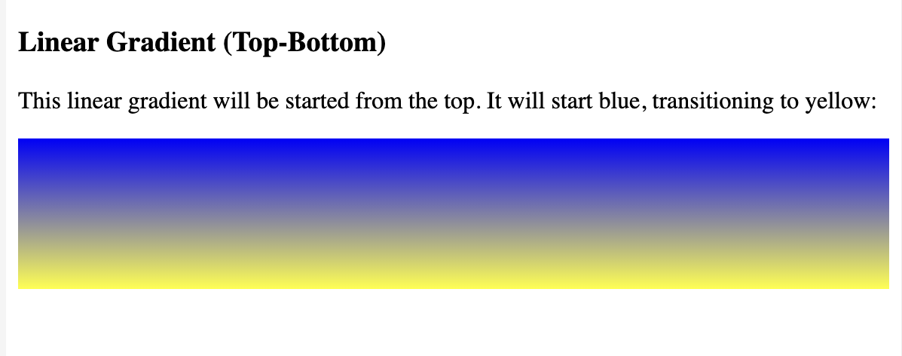
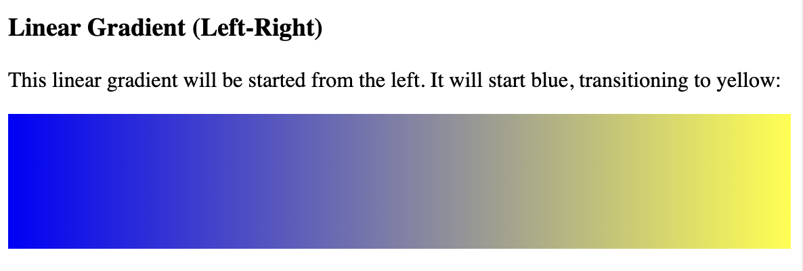
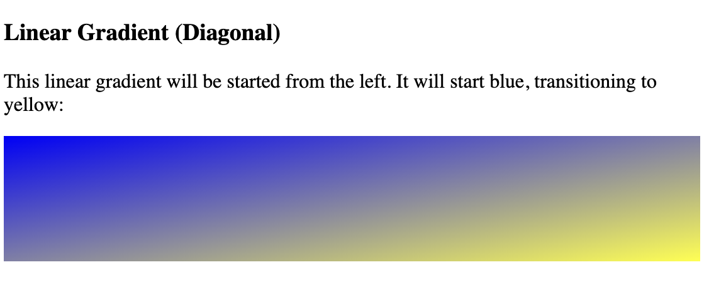
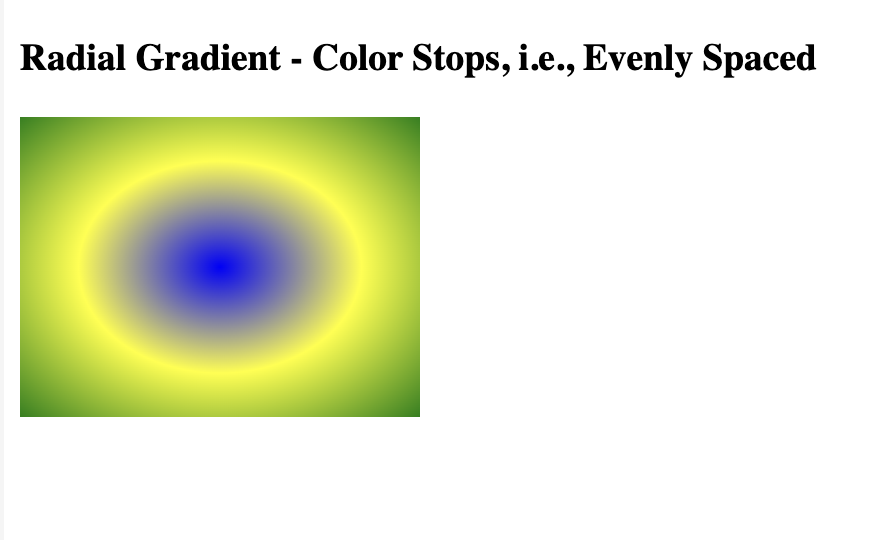
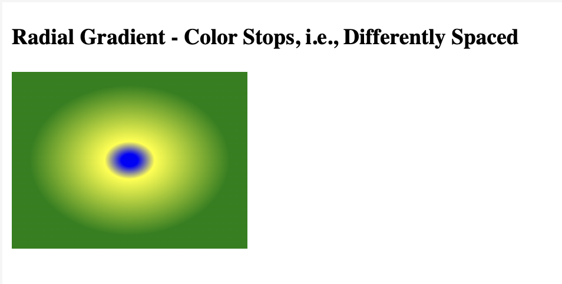

CSS Gradient: The CSS gradient property is applied to show the smooth transition inside two specified colors or more than two specified colors.
Need of CSS Gradient
The following are a few reasons why CSS gradient is used:
We do not have to apply images to show transition effects.
The bandwidth and download time usage may be reduced also.
It can give a better appearance to an element if zoomed because any gradient is produced by a browser.
Following are two types of CSS3 gradients:
Radial gradients
Linear gradients
Linear Gradient
The linear gradient in CSS3 goes left, right, up, down, and diagonally. To design the linear gradient in CSS3,
we should have to specify two or more than two color stops. These are any color which can be applied to make the smooth transition. The direction and starting point can be included with any gradient effect also.
background: linear-gradient (direction, color-stop1, color-stop2.....);
i Linear Gradient: (Top-Bottom)
The linear gradient from top to bottom is a default CSS linear gradient. Following is an illustration of the linear gradient, and it will start from the top. It will start blue and the transitions to the yellow.
Example:
Output:

The following illustration displays the CSS linear gradient. It will start from the left side and proceed to the right side. It will start blue from the left and the transitioning to the green.
Example:
Output:

When we describe the vertical and horizontal starting positions, we can create any linear-gradient diagonal.
Example:
Output:

We should have to represent at least two of the color stops for making the radial gradient. This gradient can be represented through its center.
background: radial-gradient(shape size at position, start-color, ..., last-color);
Radial Gradient: (Color Stops, i.e., evenly spaced)
color stops:, i.e., evenly spaced, is the default CSS radial gradient. It has default shapes, which can be position in the center, eclipse, size in the farthest- carner.
Example:
Output:

Example:
Output:
